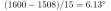
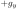
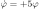
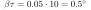
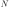
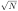

Simulation
The thesis tuned its PID gains by experiment. Here they are tested against a model. quad_sim.py integrates the Newton–Euler equations of the mathematical model at 2 kHz. It runs a line-by-line Python copy of the firmware at 250 Hz, including the integer sensor readings, both low-pass filters and the motor limits.
The airframe constants are estimates for an F450-class frame weighing 1.2 kg, so treat the numbers as indicative. A thrust-stand measurement and a bifilar-pendulum test of the real aircraft would replace them.
cd simulation
python3 quad_sim.py # writes the figures and results/summary.jsonResponse to a roll command


. Rise time (10–90 %) is 0.86 s and overshoot is below 1 %. The last degree of error comes from the estimator. On a multirotor the accelerometer barely sees tilt, so gyro integration error decays only with the filter's 10 s time constant.Rejecting a gust

Stability margins

The pitch sign error


as the pitch rate. The self-levelling loop then becomes
, an exponential with a 0.2 s time constant. The roll axis did not have this error.Attitude estimation


.Fail-safe descent

Sensor statistics


carries an uncertainty of
. At natural background the 60 s window gives ±22 %. Near a source the reading becomes precise within seconds.